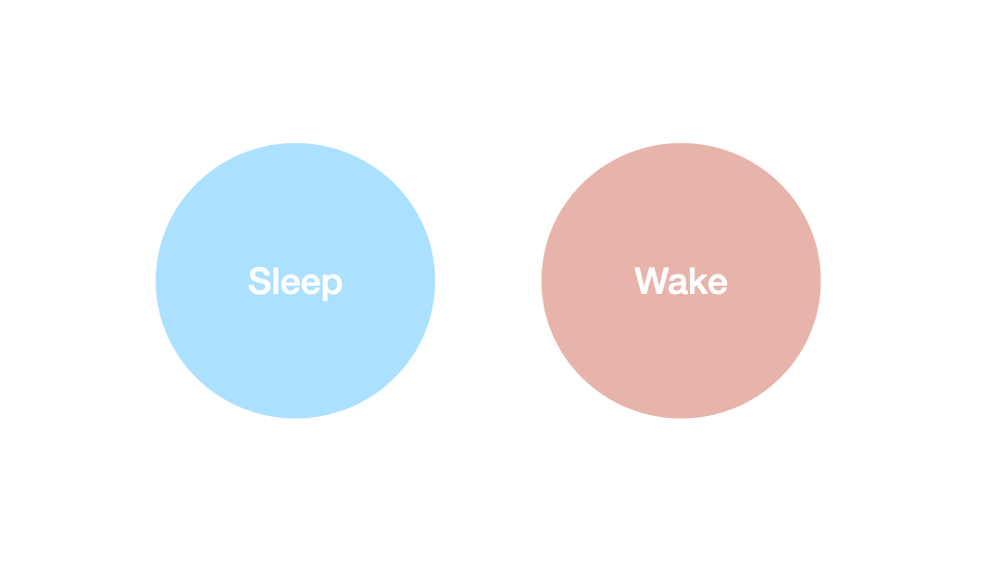
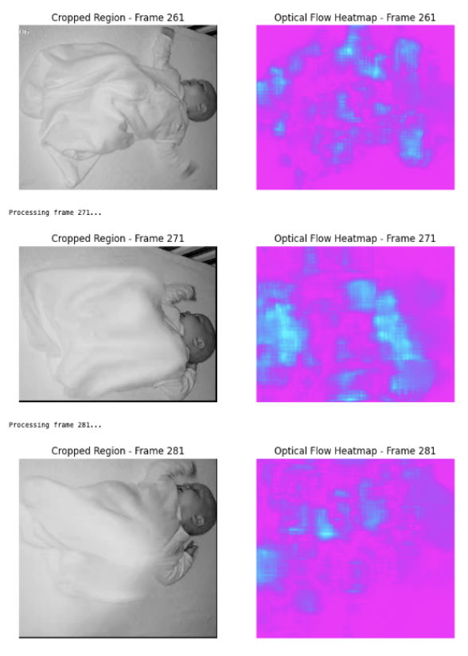
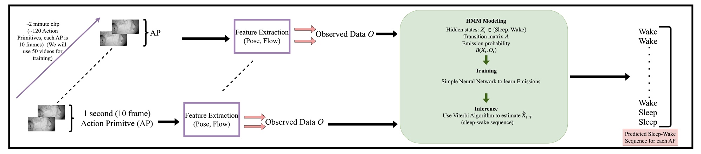
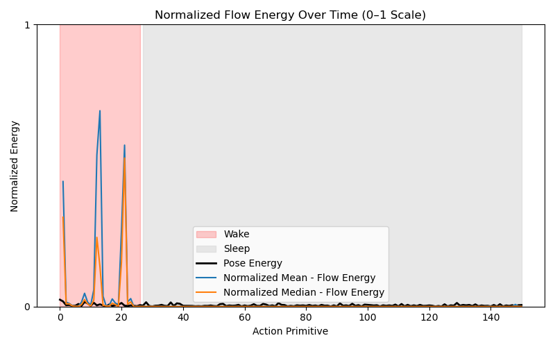
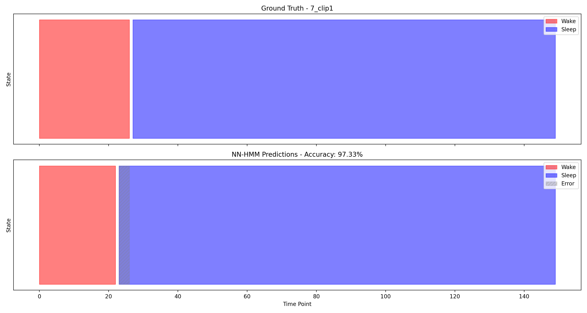
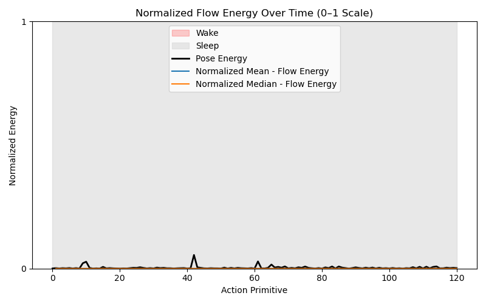
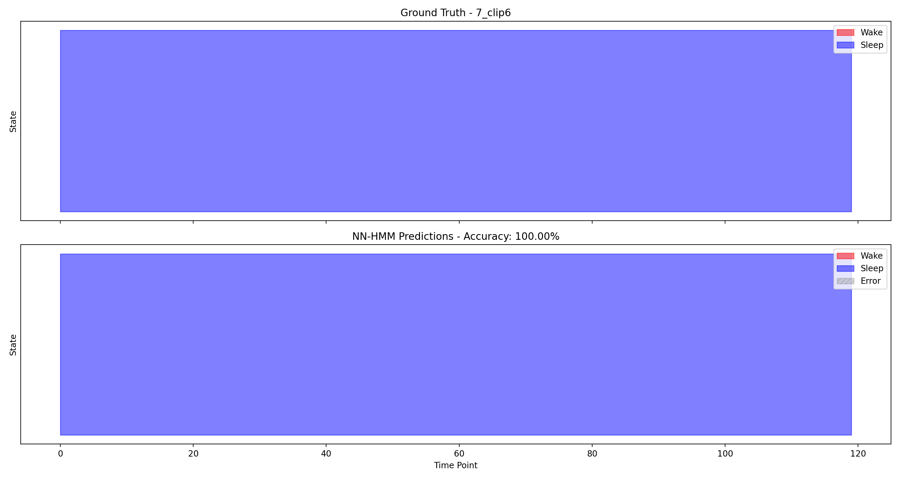

Home
Segmentation Solution
Arousal Annotation Dashboard
Compare Annotations
Towards a Segmentation Solution: Hidden Markov Models for Sleep-Wake Segmentation
What can we learn about transitioning between sleep and wake states for longer full-video segmentation on the edge?

Extracting Pose and Optical Flow features

NN-HMM architecture

Arousal Annotation Dashboard
Compare Old vs New Annotations
Selected NN-HMM Segmentation Results

Extracted Features

NN-HMM Predictions (Top: Ground Truth, Bottom: Predicted)

Extracted Features

NN-HMM Predictions (Top: Ground Truth, Bottom: Predicted)